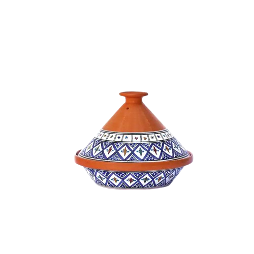

Moroccan cuisine is a vibrant and flavorful tapestry that reflects the country's rich cultural heritage and diverse influences. At the heart of this culinary tradition is the iconic Moroccan tajine, a slow-cooked stew named after the distinctive earthenware pot in which it is prepared. The tajine typically features a harmonious blend of spices, such as cumin, coriander, and cinnamon, enhancing the tender meats, vegetables, and aromatic herbs that make up its ingredients. The slow cooking process allows the flavors to meld, creating a succulent and aromatic dish. Beyond the tajine, Moroccan cuisine is celebrated for its couscous dishes, aromatic tagines, and an array of delectable pastries like baklava and msemen. The use of ingredients like saffron, preserved lemons, and olives further adds depth to the culinary landscape, making Moroccan cuisine a tantalizing exploration of tastes and textures.
